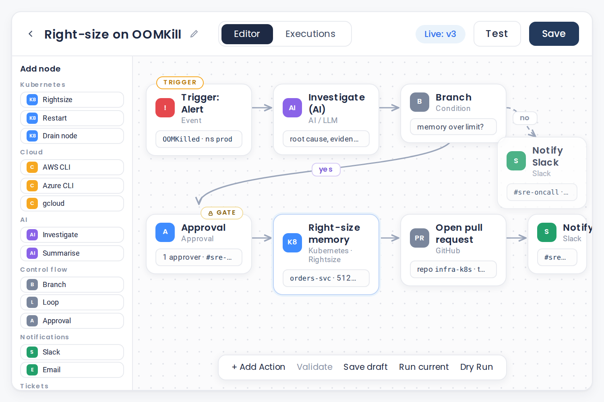
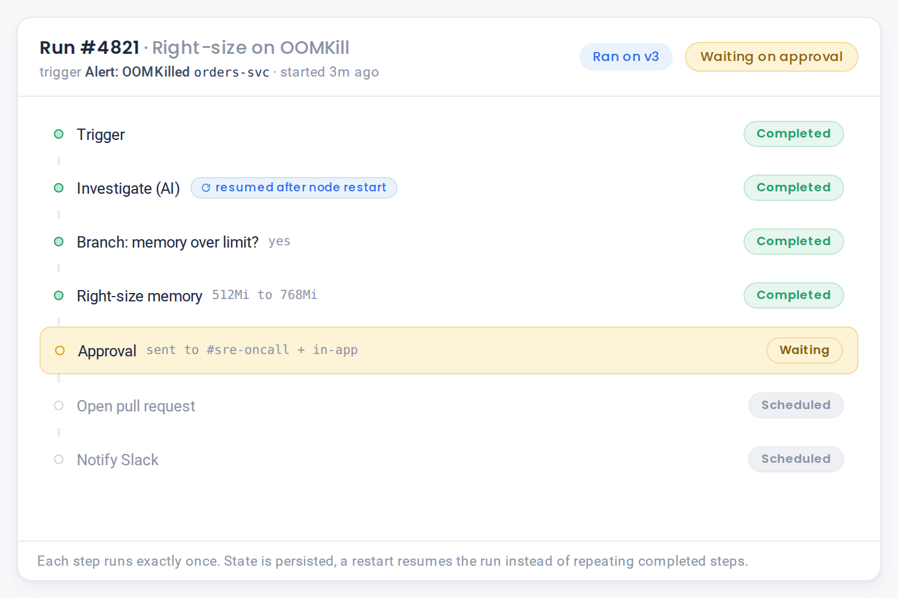
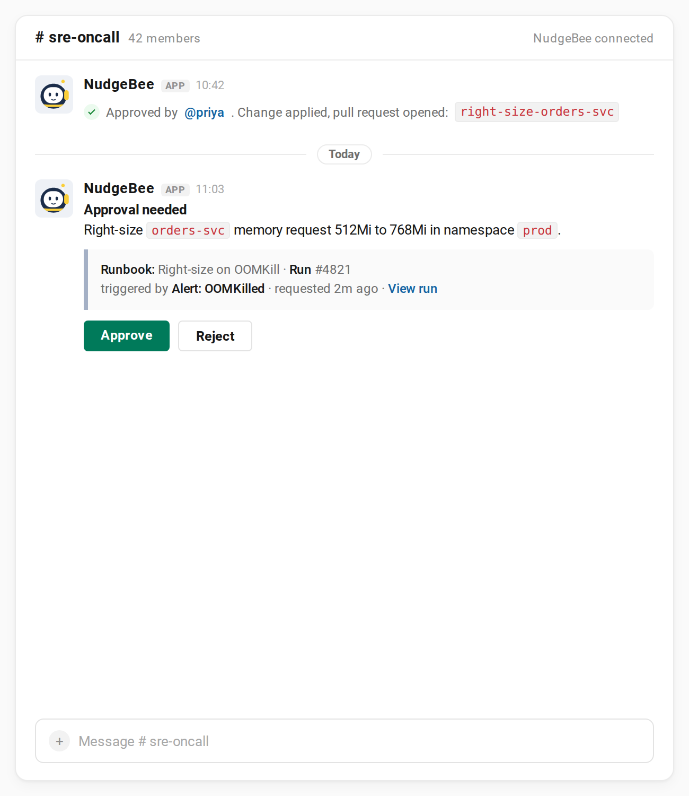
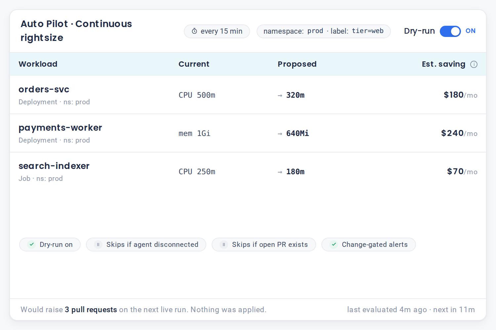

Codify the fix once. Run it safely, every time.
Turn the runbooks buried in your wiki into automation that actually runs. Build it without code, trigger it from chat, an alert or a schedule, and let it heal the routine problems on its own, behind an approval gate you control.
Self-hosted in your cluster · Human-approved by default · Crash-safe by design · Free forever tier
What is runbook automation?
Runbook automation turns a documented operational procedure into software that runs on demand or on its own. NudgeBee runbooks are built without code, triggered by chat, alert or schedule, and executed on a durable workflow engine so they never half-finish. Every change stays behind human approval unless you choose otherwise. When those runbooks run on their own, the result is auto remediation, sometimes called self-healing infrastructure: the routine problems get fixed without a person in the loop.
Your runbooks are documents. They should be software.
-
The fix for the recurring 2am page is written down somewhere, in a wiki nobody fully trusts. Following it by hand is slow, and it drifts out of date the moment the environment changes.
-
The alternative is a drawer of shell scripts: undocumented, unversioned, and dangerous to run under pressure. One wrong flag on a tired night and the remediation becomes the incident.
-
What is missing is the middle ground: the procedure as real, versioned, testable software that runs the same way every time, with a human in the loop where it matters and out of it where it does not.
From trigger to fix, in three moves
-
It triggers
An alert, a schedule, a webhook or a NudgeBee event kicks the runbook off.
-
It runs the steps
Investigate with AI, run the commands across Kubernetes, AWS, Azure and GCP, and branch on what it finds.
-
It closes the loop
It pauses for a one-click approval on anything risky, then applies the fix, notifies Slack or email, opens a ticket or a pull request, and logs every step.
When a pod is OOMKilled, a NudgeBee runbook investigates the cause, right-sizes the memory request, opens a pull request with the change, and posts the summary to Slack. It does nothing to production until someone clicks Approve.

Describe the fix. Nubi builds the runbook.
Tell the NudgeBee agent what you want in plain English, for example "when a pod is OOMKilled, right-size its memory and open a pull request after I approve," and it assembles the workflow for you.
Then refine it on a visual canvas, or keep it as YAML or JSON in git. The palette carries more than 80 built-in task types: Kubernetes actions (rightsize, restart, drain a node, delete a pod), the AWS, Azure and gcloud CLIs, database and message-queue queries, network diagnostics, and scripting in shell, Python, JavaScript or PowerShell.
Control-flow blocks (branch, loop, wait, approval, call another runbook) let a runbook make decisions, not just run a list.
- 80+ built-in actions
- Durable, crash-safe engine
- Every run versioned
- Exactly-once execution
Runbooks that finish what they start
Every runbook runs on a durable engine where each task is a checkpointed step. If a pod restarts or a node dies halfway through, the runbook resumes exactly where it left off and never executes a step twice.
Runbooks are versioned with a floating pointer to the live version, so you can change one safely while the current version keeps running.
This is the difference between a script that might leave your system half-migrated and a workflow that is crash-safe by construction.

Run it however the work arrives
Four triggers, so the runbook fires the way the problem actually reaches you.
By hand
From the console or a chat command, when a human decides.
On a schedule
With cron and a choice of overlap policies, so a slow run never stacks on top of itself.
From a webhook
Fanned out per integration, so an external system can kick off a fix.
Off a NudgeBee event
With filtering and lifecycle gating, so a specific finding triggers its own remediation.
Put the agent to work mid-runbook
A runbook step can call the NudgeBee agent itself. Mid-flow, a runbook can ask it to investigate a symptom, summarise the current state, or classify what it is looking at, and branch on the answer.
That is what makes these runbooks agentic rather than static: the automation can reason about what it finds and choose the next step, instead of blindly running to the end.

It reads freely. It changes nothing without you.
A runbook can pause and wait for a person. Approval steps are delivered where your team already works, and the runbook holds, durably, until someone approves or rejects, then continues or stops.
You decide which steps run on their own and which need a human hand on the switch, per runbook, per step.
 Slack
Slack Microsoft Teams
Microsoft Teams Google Chat
Google Chat Email
Email- Signed link
Let the routine ones heal themselves
This is auto remediation for the toil you already trust: the routine fixes become self-healing, running on a schedule inside the guardrails you set.
Auto-Pilot runs approved remediations on a schedule, autonomously, with real guardrails.
- Blast-radius scored: before it applies a change, it checks the dependency graph and auto-applies only what is safe, and skips changes below a minimum-change threshold so it never churns tiny adjustments.
- Dry-run first, so you see what it would do before it does it.
- Resource filters, so the blast radius is exactly what you chose.
- Skips itself if the in-cluster agent is disconnected, or if there is already an open pull request or ticket for that resource.
- Change-gated notifications: it tells you when something actually changed, not on every quiet run.
- Raises a GitOps pull request asynchronously, so the change lands through your normal review flow.
This is how the recurring, low-risk toil (rightsizing, cleanup) gets handled without a human, while everything else stays gated.

It drives the tools you already run
Runbook tasks call these systems directly, and approvals and notifications flow back to the channels your team already lives in.
 Kubernetes
Kubernetes AWS
AWS Azure
Azure GCP
GCP- Slack
- Microsoft Teams
- Google Chat
 PagerDuty
PagerDuty Zenduty
Zenduty Jira
Jira ServiceNow
ServiceNow GitHub
GitHub GitLab
GitLab Prometheus
Prometheus Grafana
Grafana Datadog
Datadog
A runbook step can call any of these directly, and the approval that gates it comes back through the same channel your team is already watching.
Browse all integrationsRuns in your cluster. Nothing leaves.
Self-hosted
Runs inside your own Kubernetes cluster. Zero telemetry.
Outbound only
The in-cluster agent dials out over one WebSocket. No inbound ports, no exposed API server, no VPN.
Encrypted and signed
Credentials encrypted at rest. Agent messages signed.
Bring your own model
The AI-in-workflow steps run on the model provider you choose.
Nothing leaks to the model
Outbound AI requests are scanned for secrets before they reach any model, and can be redacted or blocked.
Readable source
Readable source and self-hosted, with a free Community edition.
See it under real incident load
Multicloud complexity does not slow down when your team does. NudgeBee's SRE and AIOps agents absorb routine operations autonomously so our teams focus on high-value engineering. Their extensive library of specialist agents gives Rackspace the building blocks to rapidly create custom agentic workflows at scale.
 Nirmal Ranganathan
CTO, Global Public Cloud, Rackspace
Nirmal Ranganathan
CTO, Global Public Cloud, Rackspace

Top-10 e-commerce platform ends $180K/hr peak-season outages with agentic AI-SRE
3,000+ daily alerts correlated into actionable incidents, automated runbooks executed, and 61% of issues resolved without a human ever getting paged.
Read the case studyHow this compares
Measured against the category of script and job runners teams usually reach for first, not against any one product.
| Capability | Script / job runners | NudgeBee |
|---|---|---|
| No-code visual builder | Sometimes | Yes |
| Crash-safe, exactly-once execution | Rarely | Yes |
| Trigger from chat, alert, schedule and event | Partial | Yes, all four |
| AI steps inside the workflow | No | Yes |
| Human approval gates built in | Add-on | Yes, native |
| Autonomous auto-pilot with dry-run and guardrails | No | Yes |
| Self-hosted in your own cluster | Varies | Yes |
Compared against the category of runbook and workflow automation tooling. Individual products vary.
Frequently asked questions
For the engineer who will build the runbook and the lead who has to sign off on what it can touch.
Book a DemoRunbook automation is how the four assistants close the loop
They find the problem and propose the fix. This is the layer that runs it, on one platform and one knowledge graph.

Turn your next 2am page into a runbook.
Free forever. Self-host at any scale, or run 2 clusters or cloud accounts free on Cloud SaaS. Nothing leaves your environment. No credit card.